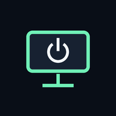

PC Wake
Bilgisayarın bir dokunuş uzakta.
PC durumu
Bilgi bekleniyor
—dBm
ESP32 durumu
Bilgi bekleniyor
Başlamak için bağlantı ayarlarını kaydet.
Henüz rapor alınmadı
Durumlar ESP32’nin son raporuna göre gösterilir.

Bilgisayarın bir dokunuş uzakta.
Bilgi bekleniyor
Bilgi bekleniyor
Başlamak için bağlantı ayarlarını kaydet.